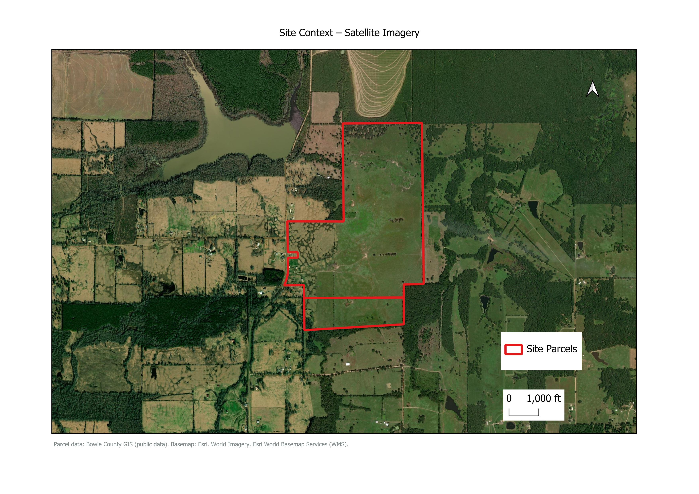
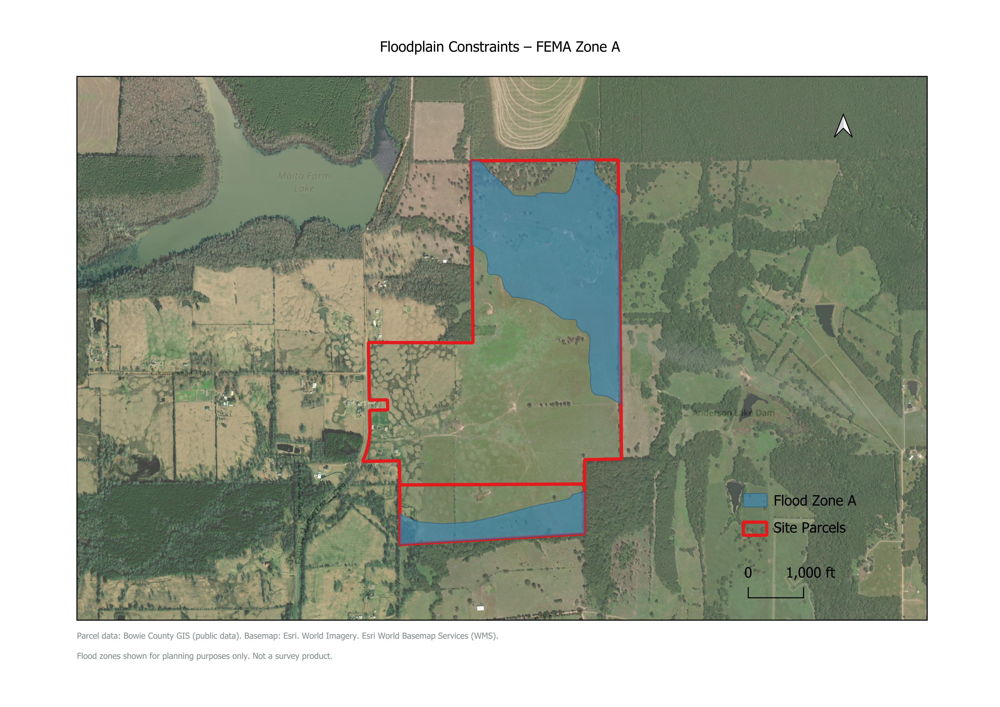

Bowie County, Texas
Parcel Feasibility Study

Project Overview
Location: Bowie County, Texas
Property Size: 367 acres
This project presents a GIS-based preliminary feasibility analysis of a 367-acre rural property using publicly available datasets. The analysis evaluated flood risk, soils, zoning, and potential development constraints.
Floodplain Assessment

Approximately 128.5 acres (35%) of the property lies within FEMA Flood Zone A, primarily affecting the northern portion of the parcel.
Key Findings
- The property contains both lower-constraint and higher-constraint areas.
- Planning and zoning information was investigated.
- Approximately 35% of the property lies within FEMA Flood Zone A.
- Seven USDA soil units were identified across the site.
- Several soils have drainage, flooding, or septic limitations.
- McKamie, Sawyer, and Annona soils present comparatively fewer development constraints.
Soil Conditions

USDA soil mapping identified several soil units with varying development suitability. Soil characteristics should be considered together with terrain, drainage, and intended land use.
Soil Summary
USDA soil mapping identified several soil units with different development characteristics. The table summarizes the main soil units, their approximate extent, location, and primary limitations.
| Soil Type | Area (ac) | Location | Main Constraint |
|---|---|---|---|
| Wrightsville-Raino complex | 65.5 | East-central, north | Poor drainage |
| Thenas fine sandy loam | 10.9 | South | Frequent flooding |
| Sawyer silt loam | 91.1 | West, south | Development limitations |
| Sardis silt loam | 62.4 | North, east | Frequent flooding |
| McKamie loam | 92.6 | North, center | Development limitations |
| Annona loam | 45.2 | Center, southeast | Development limitations |
| Adaton-Muskogee complex | 0.8 | West | Poor drainage |
Conclusion
The property contains both favorable and constrained areas. Some areas appear more favorable for development; however, site-specific engineering and field investigation are recommended before construction.
References
- FEMA — National Flood Hazard Layer (NFHL) Flood Zone Data
- USDA Natural Resources Conservation Service (NRCS) — Web Soil Survey (SSURGO Soil Data)
- Bowie County — Public GIS and Mapping Resources
- Bowie County Appraisal District — Property Records and Market Information
- Bowie County — Code of Ordinances
- Esri — World Imagery and World Topographic Map Basemap Services
Need Help Evaluating a Property?
Learn more about available services or get in touch.
Contact